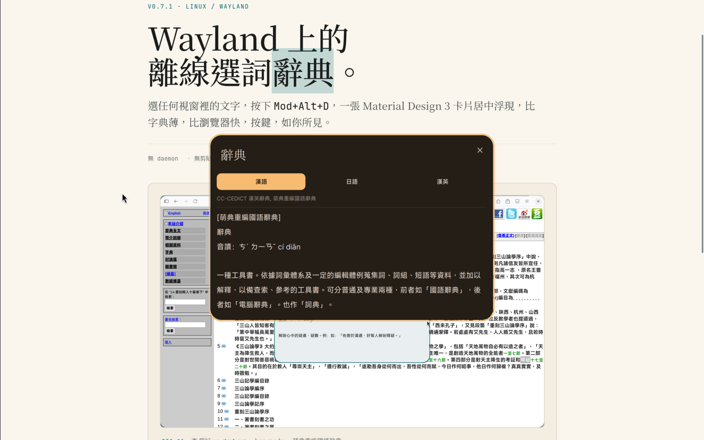

選任何視窗裡的文字，按下 Mod+Alt+D， 一張 Material Design 3 卡片居中浮現，比字典薄，比瀏覽器快，按鍵，如你所見。

需要 niri + Dank Material Shell + sdcv。字典需另行安裝（見 dictionary-sources.md）。
$ git clone https://github.com/Nocehi/dms-lookup $ bash dms-lookup/packaging/install-user.sh $ dms ipc call plugins reload dankLookup